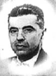
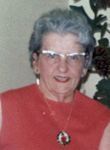

JOSEPH-ARTHUR LAROCHEfiche familiale
*******************************************************************************
Joseph-Arthur Larochedécède à l'âge de 58 ans
Naissance 18 oct 1875 à St-Antoine-de-Tilly, cté Lotbinière
Décès 15 déc 1933 à Launay, cté Abitibi
Sépulture au cimetière de Taschereau, cté Abitibi
Père: Philias-Louis-Élie LarocheMère: Philomène Charest
Mariage le 13 avr 1896 à Fall River, Mass. USA
Épouse: Eugénie Charestdécède à l'âge de 73 ans
Naissance le 2 mars 1879
Décès le 28 juin 1952 à Malartic, cté Abitibi
Sépulture au cimetière de Launay, cté Abitibi
Père: Samuel CharestMère: Zélire Houde
*******************************************************************************
Enfant 1 Hénédine Larochedécède à l'âge de 21 ans.
Naissance 25 fév 1897 à Fall River, Mass. USA
Décès: 14 oct 1918 à Issoudun, cté Lotbinière
Décède de la grippe espagnole.
Mariage le 20 jan 1918 à Taschereau, cté Abitibi
Conjoint: Apolinaire Bédard
-------------------------------------------------------------------------------
Enfant 2 Joseph Larochedécède à l'âge de 17 ans.
Naissance 11 oct 1898 à Ste-Croix, cté Lotbinière
Décès: 13 avr 1916 à Issoudun, cté Lotbinière
Sépulture au cimetière de Issoudun
-------------------------------------------------------------------------------
Enfant 3 Armand Larochedécède à l'âge de 81 ans.
Naissance: 8 nov 1900 à Ste-Croix, cté Lotbinière
Décès: 26 jul 1982 à Val-D'Or, cté Abitibi
Sépulture: au cimetière de Launay
Mariage le 21 mai 1924 à Taschereau, cté Abitibi
Conjointe: Adélina Lemieuxn. 5 avr 1899 d. 12 mai 1982
Père: Charles LemieuxMère: Flora Pelletier
-------------------------------------------------------------------------------
Enfant 4 Fabiola Larochedécède à l'âge de 82 ans.
Naissance 1 juin 1902 à Ste-Croix, cté Lotbinière
Décès: 12 mars 1985 à Lachine, Île-de-Montréal
Mariage le 13 avr 1921 à Taschereau, cté Abitibi
Conjoint: Joseph St-Pierren. 2 fév 1899 d. 4 jul 1977
Père: Cyriaque St-PierreMère: Hélène Gagnon
-------------------------------------------------------------------------------
Enfant 5 Léo Larochedécède à l'âge de 90 ans.
Naissance: 24 mars 1904 à Issoudun, cté Lotbinière
Décès: 26 mai 1994 à Launay, cté Abitibi
Sépulture: au cimetière de Launay
Mariage le 23 oct 1928 à Villemontel, cté Abitibi
Conjointe: Dorina Bouchern. 28 sep 1905 d. en 1996
Père: Jean-Baptiste BoucherMère: Christine Croteau
-------------------------------------------------------------------------------
| 
 |
Enfant 6 Wilfrid Larochedécède à l'âge de 62 ans. Naissance 28 déc 1905 à Issoudun, cté Lotbinière Baptême: 30 déc 1905 à Notre-Dame d'Issoudun Baptisé Joseph, Wilfrid, Hildevert. Parrain Hildevert Houde, marraine Hedwidge
Charest. Décès le 9 déc 1968 à Macamic, cté Abitibi Décédé suite à une longue maladie qui dura 32 ans, la sclérose en plaques, au sanatorium de Macamic. Sépulture: au cimetière de Val D'Or (ses ancêtres)Mariage le 23 oct 1928 à St-Jean-L'Évangéliste de Macamic Conjointe: Annette Henrin. 18 avr 1908 d. 26 aoû 1977 Père: Eugène HenriMère: Graziella Provost(sa famille) |
-------------------------------------------------------------------------------
Enfant 7 Yvonne Larochedécède à l'âge de 29 ans.
Naissance 4 mars 1907 à Issoudun, cté Lotbinière
Décès: 2 août 1936 à Launay, cté Abitibi
Mariage le 11 nov 1925 à Taschereau, cté Abitibi
Conjoint: Albert Kirouacn. 5 oct 1902 d. 1 mai 1997
Père: André KirouacMère: Marie-Asilda Caron
-------------------------------------------------------------------------------
Enfant 8 Héliodore Larochedécède à l'âge de 63 ans
Naissance 29 déc 1908 à Issoudun, cté Lotbinière
Décès 13 nov 1972 à Amos, cté Abitibi
Sépulture au cimetière de Launay
Mariage le 31 déc 1934 à Taschereau, cté Abitibi
Conjointe: Amanda Thibeaultn. 12 mai 1906 d. 9 jul 2003
Père: Joseph ThibeaultMère: Adélia Dubé
-------------------------------------------------------------------------------
Enfant 9 Émile Larochedécède à l'âge de 58 ans
Naissance 31 jul 1910 à Issoudun, cté Lotbinière
Décès 15 août 1968 à Val-D'Or, cté Abitibi
Décédé d'un accident de circulation.
Funérailles: 19 août 1968 à Val-D'Or, cté Abitibi
Sépulture au cimetière de Val D'Or
Mariage le 2 août 1945 à Launay, cté Abitibi
Conjointe: Thérèse Alexandren. 8 juin 1924
Père: Ferdinand AlexandreMère: Anna Marcouillier
-------------------------------------------------------------------------------
|
|
Enfant 10 Cécile Laroche
décède à l'âge de 92 ans.
Naissance 29 mar 1912 à Issoudun, cté Lotbinière
Décès le 30 oct 2004 au Centre hospitalier d'Amos
Funérailles: 2 nov 2004 à Cathédrale Ste-Thérèse-d'Avila d'Amos
Sépulture: au cimetière de Launay
Mariage le 31 déc 1935 à Taschereau, cté Abitibi
Conjoint: Emile Thibeault
n. 5 jul 1911 d. en 1999
Père: Joseph Thibeault
Mère: Adélia Dubé |
-------------------------------------------------------------------------------
Enfant 11 Jeannette Larochedécède à l'âge de 60 ans.
Naissance 15 mai 1913 à Issoudun, cté Lotbinière
Décès: 31 jul 1973 à Malartic, cté Abitibi
Mariage le 3 oct 1938 à Taschereau, cté Abitibi
Conjoint: Rodolphe Carriern. 11 sep 1912 d. 2 mar 1990
Père: Ortens CarrierMère: Albia Jutras
-------------------------------------------------------------------------------
Enfant 12 Emérentienne Larochedécède à l'âge de 74 ans.
Naissance 29 mars 1915 à Issoudun, cté Lotbinière
Décès: 19 mars 1990 à Longueuil, cté Chambly
Mariage le 30 août 1941 à Taschereau, cté Abitibi
Conjoint: Lomer Lizotten. 12 jan 1914 d. 18 avr 1985
Père: Joseph LizotteMère: Emma Bélanger
-------------------------------------------------------------------------------
Enfant 13 André Larochedécède à l'âge de 11 ans
Naissance 18 avr 1917 à Issoudun, cté Lotbinière
Décès 10 juin 1928 à Launay, cté Abitibi
Sépulture au cimetière de Launay
-------------------------------------------------------------------------------
Enfant 14 Jeanne-D'Arc LarocheNaissance 18 déc 1919 à Taschereau, cté Abitibi
Soeur Missionnaire Oblates de Marie.
-------------------------------------------------------------------------------
Enfant 15 Marcel LarocheNaissance 15 août 1921 à Taschereau, cté Abitibi
Baptême: 16 août 1921 à Taschereau, cté Abitibi
Décès avant 2003
Mariage le 21 mai 1956 à St-Jean-Baptiste de Montréal
Conjointe: Gertrude BenoitPère: Antonio BenoitMère: Marie-Rose Paquin
-------------------------------------------------------------------------------
Enfant 16 Thérèse LarocheNaissance 3 mars 1925 à Launay, cté Abitibi
Baptême: 4 mars 1925 à Taschereau, cté Abitibi
Décès: avant 2003
Mariage le 19 jul 1952 à Malartic, cté Abitibi
Conjoint: Patrice Grandmontn. 26 déc 1915 d. 29 nov 1991
Père: Arthur GrandmontMère: Régina Pérégny
-------------------------------------------------------------------------------
Enfant 17 Fernand Larochedécède à l'âge de 6 semaines
Naissance 7 juin 1926 à Launay, cté Abitibi
Baptême: 8 juin 1926 à Taschereau, cté Abitibi
Décès 25 jul 1926 à Launay, cté Abitibi
*******************************************************************************